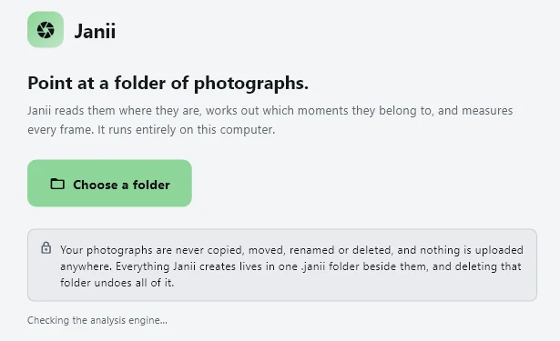
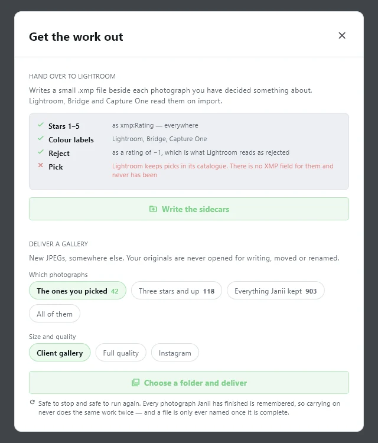
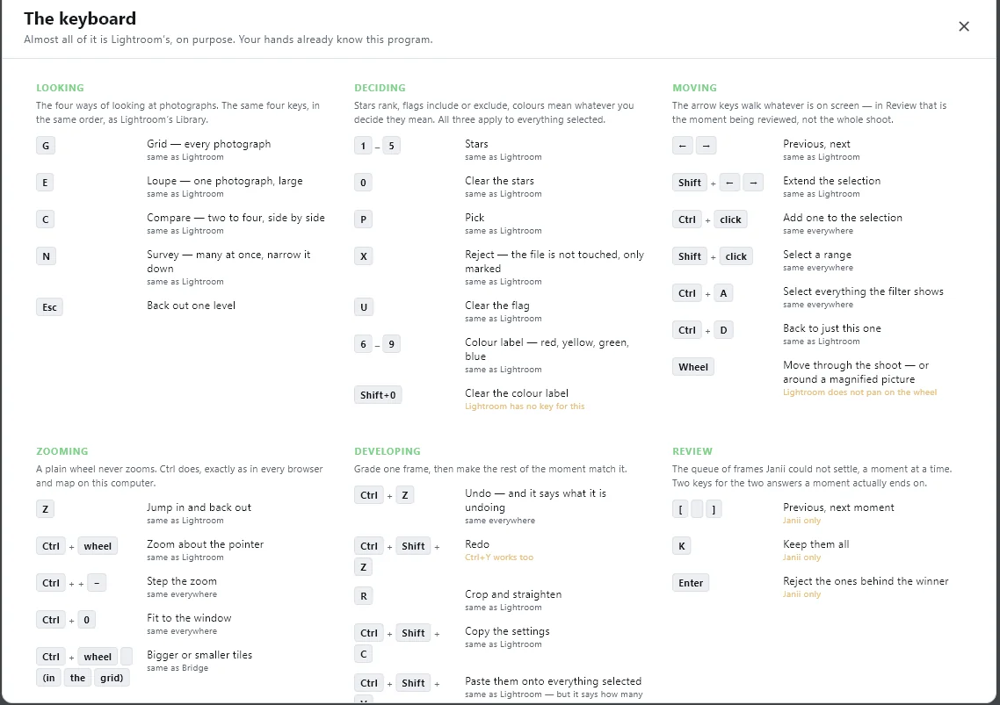

How to runJanii.
Nine short chapters, real screenshots from the current beta build where a screenshot exists to show. Where it does not, this guide says so instead of faking one.
- beta build 2026-09-04
- Windows only
- 9 chapters
- updated 2026-09-06

01
Install
Janii is a free public beta, downloaded directly as a self-contained folder. It is not on the Microsoft Store, so Windows warns you before the first run. That warning is expected.
- Open the releases page on GitHub and download the ZIP, about 130 MB.
- Unzip the whole
Janii-beta-win64folder anywhere on disk.janii.exe,engine,models, the bundledpythonfolder andJanii.batmust stay side by side; moving one out breaks the rest. - Double-click
Janii.bat. A console window opens briefly, then the app itself. - Windows SmartScreen shows "Windows protected your PC" because the build is not code-signed yet. Click "More info", then "Run anyway".
- First launch opens straight to the folder picker: no sign-up, no setup wizard. Chapter 2 covers that screen.
No Python install needed. A private copy of Python and every library Janii's engine uses ships inside the folder, isolated from anything already on your machine. That is what the "self-contained" claim means in practice.
Heads up: Windows only, for now. There is no macOS or Linux build.
No screenshot for this chapter: the SmartScreen warning shown above comes from Windows itself, not from Janii.
02
Point it at a folder
One screen, one button. Janii reads the folder where it is; it never asks to copy anything first.
- Wait for the green "Analysis engine ready" check under the button. If it does not turn green, chapter 8 (Troubleshooting) covers what that means.
- Click "Choose a folder" and select the folder holding your RAW and/or JPEG files. Subfolders are read too.
- Nothing is copied, moved or renamed at this point, or at any point. See chapter 3 for the exact wording Janii itself shows before it starts.
03
What it promises, before it touches anything
After you pick a folder, Janii shows exactly what it is about to do, and what it will never do, before you confirm.
- A count of the photographs found, RAW and plain files broken out separately, and the total size on disk.
- Three things it will do: read every photograph where it is without opening it for writing, group them into moments, and measure each frame to say which is the one to start from.
- Three things it will never do: never copy, move, rename or delete a photograph (there is no delete function in Janii, anywhere); never send anything anywhere, it does not use the network; never change what you decide, your stars and flags stay yours.
- Where it will keep its own working files: beside the photographs in a
.janiifolder (the default, and the one that travels with the photographs if you move them), or in a separate folder elsewhere on the computer if you would rather nothing was written next to a read-only archive.

04
While it is working
A progress screen tracks photographs measured out of the total. How long this takes depends entirely on how many RAW files there are and how fast your CPU is; there is no GPU path.
- Janii reads the JPEG preview already embedded in each RAW file first, rather than decoding the full sensor data, which is most of why this is faster than it sounds. A file only gets a full decode when it has no usable preview.
- You can stop at any point. Nothing done so far is lost or has to be redone: Janii remembers what it already finished.
- A large wedding (several thousand RAW files) can take a couple of hours on an ordinary laptop. Nobody has published a firm number yet, so treat any estimate, including this one, as something to verify on your own machine rather than a promise.
Known issue in this beta: the rotating tip text at the bottom of this screen sometimes renders as small solid blocks instead of readable words, a font-loading bug in this specific screen. It does not affect the progress bar, the count, or anything Janii is actually doing; it is purely cosmetic. No screenshot of this screen is included in this guide because of it.
05
Reading the results
Once a folder is measured, Janii sorts it into moments, then into the story and the memories. Every frame carries one of four short tags rather than a bare score.
- send this one chosen for the story
- your eyes too close to call, worth a look
- already covered a near duplicate that lost
- only shot once the only capture, protected
- Moments are frames of one thing shot close together in time: a burst, a scene, a toast. A moment of fifteen near-identical frames typically collapses to the two or three that actually differ.
- The story is the best photographs that also cover the day, chosen first, to a target count that comes from your own shoot's size, with no padding to reach it.
- The memories is the story plus enough more that nobody who actually appears in the shoot is left with zero photographs of themselves. That "nobody missing" guarantee belongs to the memories specifically, not the story.
- Grid, Loupe, Compare and Survey (keys
GECN, same layout as Lightroom's Library module) are four ways of looking at the same set of decisions; chapter 7 lists every key.
No screenshot in this chapter: the grid, review and moment screens in this beta build are full of real photographs from an actual wedding shoot used for testing, and this guide does not publish real clients' photographs. The tag vocabulary above and the keyboard shortcuts in chapter 7 are shown instead.
06
Handing off
Janii's own opinion is a starting position, not a final word. Every tag can be overridden with a star, a flag or a rejection, the same way as in Lightroom, before you hand anything off.
- Write the sidecars: a small
.xmpfile next to every photograph you decided something about. Lightroom, Bridge and Capture One read it on import: stars 1 to 5, colour labels, and a reject written as a rating of −1. Picks are the one exception; Lightroom's own catalogue format has no XMP field for a pick, and never has, so that one state does not round-trip. - Deliver a gallery: new JPEGs, written somewhere else, at a chosen size and quality (client gallery, full quality, or an Instagram-sized export) and from a chosen subset (what you picked, three stars and up, everything Janii kept, or all of them). Your original RAW and JPEG files are never opened for writing either way.
- Both actions are safe to stop and safe to run again. A file is only ever written once it is complete, and work already finished is never redone.

07
Keyboard shortcuts
Almost all of it is Lightroom's Library module, on purpose, so a working photographer's hands already know the program.

Janii-only keys: in Review, [ and ] step between moments, K keeps every frame in the current moment, and Enter rejects everything behind the winner. Those three have no Lightroom equivalent because Lightroom has no concept of a moment.
08
Troubleshooting
- Windows SmartScreen appears: expected, because the build is not code-signed yet (chapter 1). Click "More info", then "Run anyway".
- Antivirus flags the download or the launch: also possible for the same reason (an unsigned new binary). Nothing in Janii's engine calls out to the network; if you want to verify the ZIP itself was not tampered with, compare its SHA-256 checksum against the one published on the download section of the landing page.
- "Analysis engine ready" never turns green: the bundled Python environment inside the folder is likely incomplete or was separated from the rest of it. Re-download the ZIP and unzip it fresh, keeping every file together, rather than copying
janii.exeout on its own. - It is taking a long time: expected for a large wedding on CPU only; see chapter 4. There is currently no progress estimate more precise than the count shown on screen.
- The rotating tip text looks like solid blocks: a known cosmetic font-loading bug on the progress screen (chapter 4); it does not affect the analysis itself.
- Reporting a bug: the most useful report is a precise one: which screen, what you clicked, what you expected, what happened instead, and roughly how many RAW files and which camera. Write to andrej@arling.sk.
09
Glossary
Terms used throughout this guide, as Janii itself uses them.
- Moment
- Frames of one thing, shot close together in time: a burst, a scene, a toast. The unit Janii groups photographs into before deciding anything.
- Story
- The best photographs that also cover the day: a target-count set seeded first, with no padding added just to reach the number, and no guarantee tail.
- Memories
- The story plus enough more that nobody who actually appears in the shoot is left with zero photographs. The "nobody missing" guarantee belongs here, not to the story.
- send this one
- A frame's tag when it is chosen for the story.
- your eyes
- A frame's tag when Janii's own comparison was too close to call confidently, and it is left for a human to decide.
- already covered
- A frame's tag when it is a near duplicate of a stronger frame of the same moment: it lost, not because it is bad on its own.
- only shot once
- A frame's tag when it is the only capture of something that happened. Protected from being called redundant even if it is not the sharpest frame in the folder.
- .janii folder
- Where everything Janii creates lives: its own working database, thumbnails, and, once you ask for it, XMP sidecars or an exported gallery. Delete it and it is as if Janii was never there.